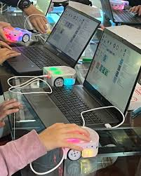

Benvenuto nel mio Portfolio PCTO
Studente: Endi Soto – Classe 4^ Informatica
Periodo stage: 9 – 24 Aprile 2026 (dal lunedì al venerdì)
Obiettivi: vedere come funziona un ufficio, fare pratica concreta, conoscere meglio l'ambito informatico e la robotica educativa.
Frequento il quarto anno di Informatica e ho scelto questo stage per mettere alla prova le cose studiate a scuola e capire se la robotica può essere un settore interessante per il futuro. Nelle due settimane ho lavorato con robot didattici, fatto manutenzione hardware e creato un sito web personale.
